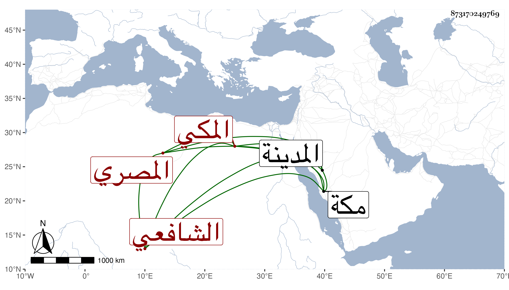

0902Sakhawi.DawLamic.ITO20230111-ara1.EIS1600.873170249769
Biography ID: 873170249769
898
علي بن عمر بن علي بن محمد بن علي بن خليل المصري الأصل المكي الشافعي الآتي أبوه وجده ويعرف كهو بابن السيرجي . ولد في رمضان سنة اثنتين وثمانين وثمانمائة بمكة ونشأ بها فحفظ المنهاج ومجموع الكلائي والجرومية وقرأ على الشمس البلبيسي الفرضي حين مجاورته المجموع المشار إليه وعلى السيد عبد الله الإيجي في الفقه وكذا حضر دروس السيد كمال الدين بن حمزة ولازم الجمالي أبا السعود في دروسه وتحديثه واليسير في الأصول عند العلاء المحلي الحنفي النقيب حين مجاورته وسمع على الشفا وقرأ ما فاته منه وكذا لازمنى في غيره وكتبت له إجازة وزار مع أبيه المدينة في سنة ثمان وتسعين .
